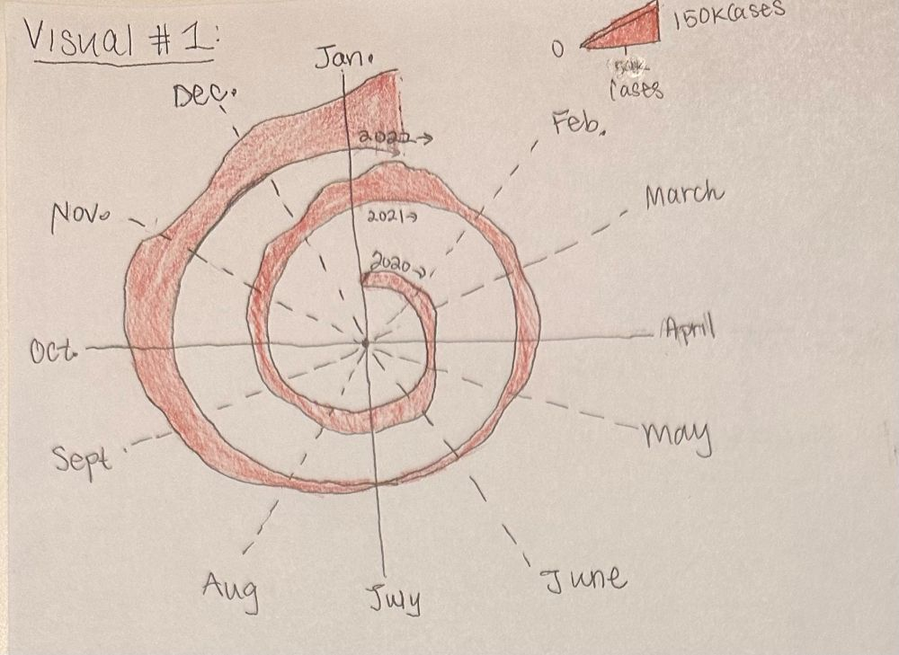
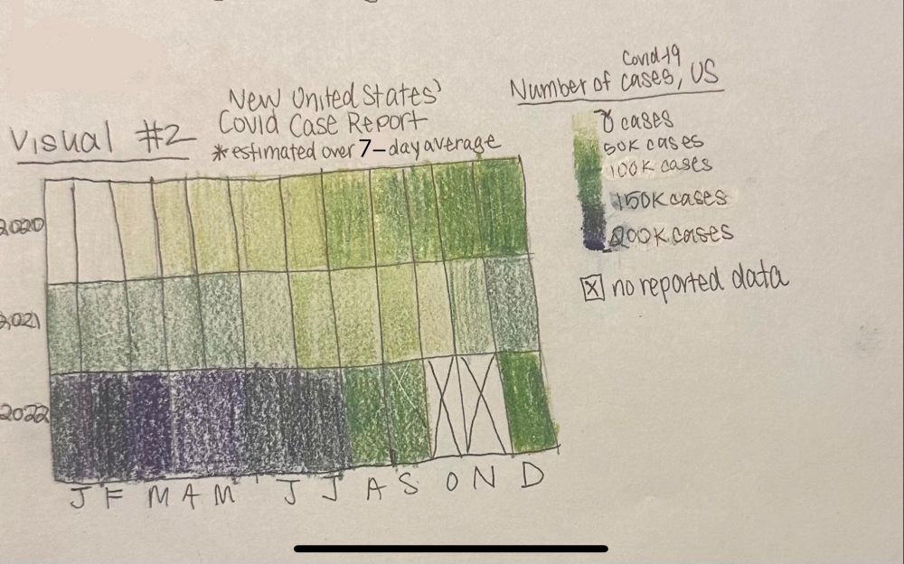
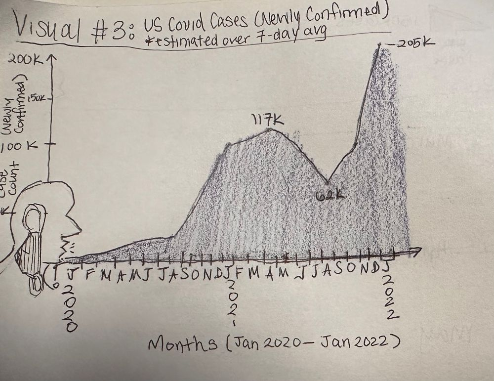

Reading & Critique

Insights about the data/visualization:
- Visualization uses clock-like movement and understanding as month/time axes for data.
- The number of cases tends to ween during the summer moonths, but rapidly increases towards the fall.
- The winter of 2021 and 2022 seem to be where 7-day average cases accumulate the most.
Design Critique:
I would like to focus my critique on communication and forced assumptions. In this visualization, one could draw from its annotation and relative timeline that the analyst wish to draw attention to the number of Covid-19 cases occuring since March 2020, ending its timeline in Jan 2022. The spiral of data points runs alongside the message of the pandemic, "spiraling out of control", which is an enticing way to display data in a op-ed. Using red, a color often pointing to blood and the life of humans, depicts the real fear of Covid-19: death. Indicating the '7-day average' of cases also keeps the reader informed.
However, some areas of this visualization loses in readability. Points are considered with three variables (month, year, case amount), yet this second variable is reliant on annotated notes, indicating where the year would start. This understanding is helpful for those who use the Gregorian calendar, but could be confusing otherwise. Additionally the graph is not centered--one could some additional data is being presented despite the nonconformity. Arcs describing the fall months are technically larger than the winter/spring ones, what was the reason for that? The legend explain how size is meant to indicate a number of cases, yet the scale is not easily interpretable. Miscommunication between audience members trying to understand trend of Covid-19 cases is what this visualization thrives at, causing it to ultimately fail at its function.
Visualization Sketches

Design Rationale for Sketch 1:
- Retain original visual's imagery, but fixes axis symmetry and increase size readability.
- The extra year variable connecting spiral points can be confusing to readers.
- Legend of size variability could largely varied, as trends are not easily trackable.
- I would like to focus on how same month-different year comparison can be translated visually.

NOTE: Extra information (average from Jan 2022-Dec 2022) was included in this graph for larger emphasization on case trend.
Design Rationale for Sketch 2:
- Using a color gradient allows for greater readability trend of reported cases over the years.
- Values are well defined with enough legend variability between case count and color shift.
- Technically month and year are the same variable, just different classifications, which is repetitive.
- Comparing months within a year (typical season people get Covid-19) is relatively readable.
- I would like to move away from repetitive variables in visuals and emphasize the trend of Covid-19 cases.

Design Rationale for Sketch 3:
- This visual retains common format of line graph, accesible to diverse audiences.
- Inclusion of phenomena of Covid-19 (coughing aerosol leads to move cases) lets visual be "on-theme" with article.
- Month axes could be relatively simplified as more focus is the trend over 2 years (Jan 2020-2022).
- Increasing creatively of visual to be generally "eye-catching" in a news article is my focus.
Final Visualization Design

Final Writeup
Despite the New York Times' article being an op-ed, its title, "Here's When We Expect Omicron to Peak", explains how the author's purpose for this article to warn people about a new variant of Covid-19, using predictions and strategies that previously determined different "peaks" of Covid in the past. At this time, the United States has experienced neraly two years of the pandemic, indicating a use of trends and past mistakes to understand the future. Keeping this idea in mind, I opted for two types of visuals in this chart: confirmed case count, a data variable part of the original NYT visual, and a trendline. The confirmed case count can be dtermined by the y-axis, but an additional gradient shows the correlation between the number of tests during on the same day as well. This test count largely peaked as well in Jan 2021, the color desaturating over time as the confirmed:tested ratio draws closer to each other. The trendline is based in a polynominal line of best fit, as its arc indiciate to the audience that Covid-19 cases tend to peak towards the winter, but with enough testing and pandemic measures, can eventually decrease by the summer. I wish to let the NYT audience understand that Covid-19, despites its many variants, will peak during the winter season, but due diligence will ensure its control.
I chose the spherical shape of Covid-19, alongside a red trendline (associated with average change in cases) and blue test count gradient to draw more creativity and attraction to the reader. That being said, this chart does not feel as creative as the original NYT visual, despite its now clear readability. While data visualization's main purpose is to provide a visual interpretation of quantifiable numbers, one may have to trade its artistic aspect to ensure communication between all parties is sound.